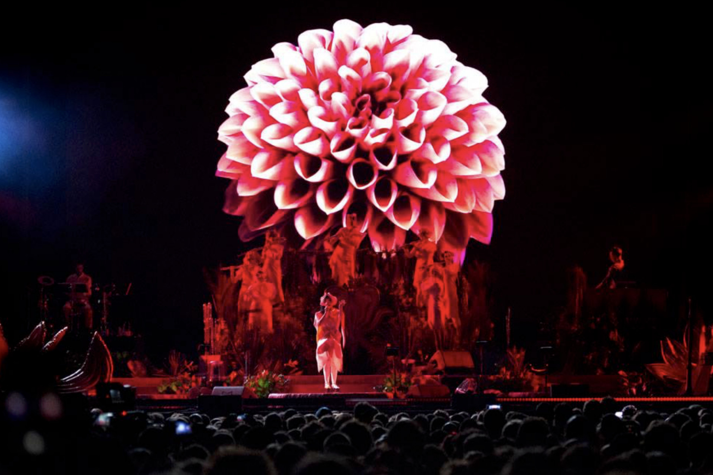
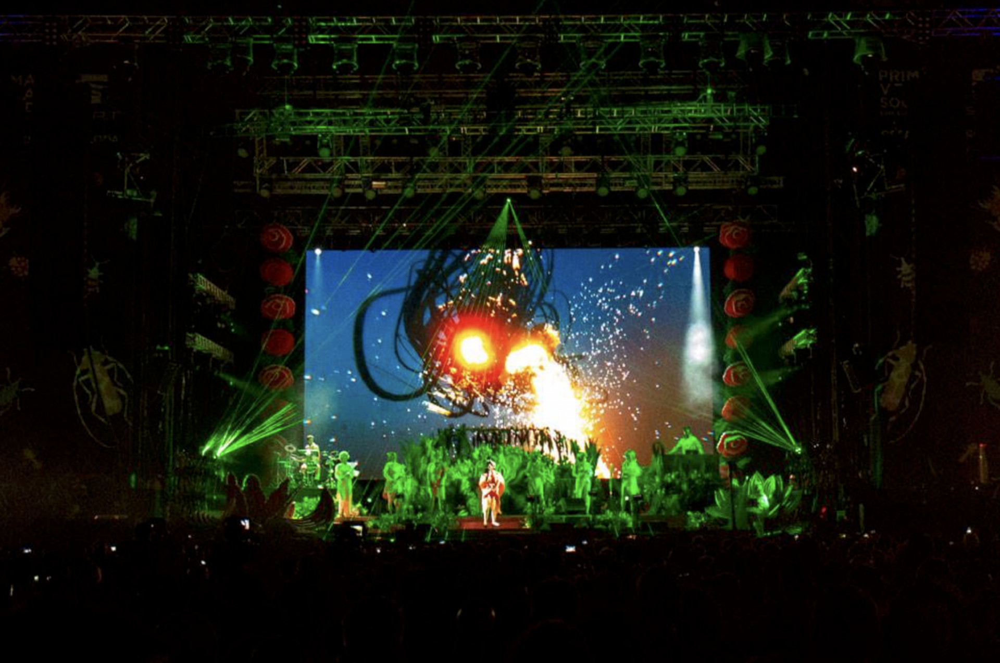
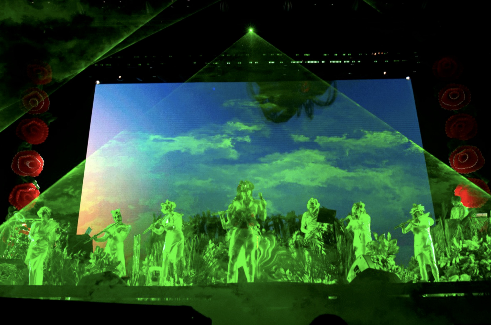

Tour Utopia 2023
El proyecto fue un viaje colaborativo con Björk y el equipo artístico: James Merry, Sverrisson y Margrét Bjarnadóttir.
La isla utópica era un espacio mágico, inspirado en las pinturas clásicas islandesas y en las brillantes noches de verano de Islandia.
Crecer en Islandia te enseña a respetar la naturaleza y a entender la necesidad de coexistir con ella en lugar de intentar controlarla demasiado.
Combinar el ritmo de la naturaleza con el ritmo de lo humano. La isla es un deseo, un deseo de un futuro en el que aprendamos a hacer que la tecnología y la naturaleza colaboren. Tal vez sea una utopía, pero es muy posible, si nos tomamos en serio el cambio climático.